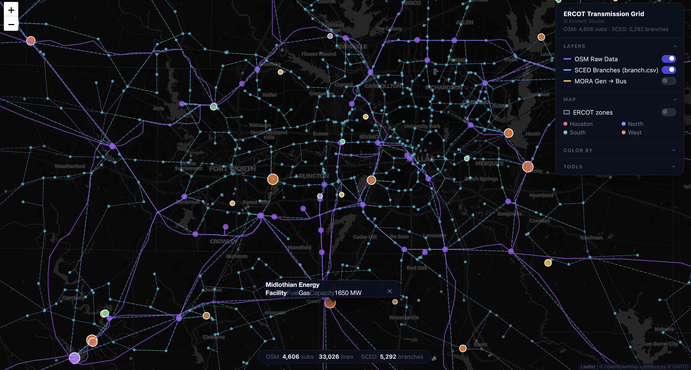
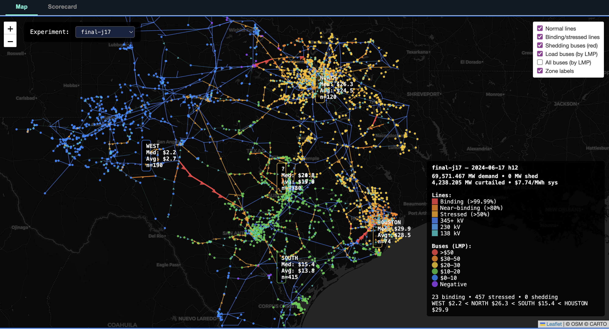

An AI-driven methodology for building more realistic synthetic electric grid models
Original PDF (opens in new tab)
Abstract
This project asked a practical question for electricity market research: can we build a useful DC Security-Constrained Economic Dispatch (DC-SCED) model of ERCOT using only public data, and can an AI coding agent do most of the implementation work? Over three months, the work moved from trying to replicate Texas A&M's synthetic-grid methodology to building directly from OpenStreetMap transmission topology, ERCOT's MORA generator registry, and EIA-860 generator characteristics.
The final model has 3,786 buses, 4,817 branches, 1,185 generators totaling 159 GW, and 289 batteries totaling 17.5 GW / 54.3 GWh. It produces zero load shedding on all three calibration days and four of six unseen validation days, and it reproduces important qualitative ERCOT congestion geography: the WEST-NORTH price spread on high-wind days, the WESTEX export constraint emerging from the OSM-derived 345 kV backbone, and Houston-import bottlenecks at summer peak.
The paper is careful about what the model is and is not. Quantitative LMP magnitudes still diverge from ERCOT's published Real-Time SCED prices by $5-190/MWh depending on the day, so the contribution is transparent, reproducible grid structure, not price-level accuracy.
The problem
Market simulation and reliability analysis need grid models that produce realistic congestion and locational marginal prices (LMPs). The best operational models are proprietary and protected as Critical Energy Infrastructure Information (CEII). Public models, by contrast, are usually synthetic: they mimic broad grid characteristics but do not claim to represent actual transmission lines or congestion paths.
That creates a difficult tradeoff for academic researchers. If the network is realistic but restricted, results are hard to publish. If the network is publishable but synthetic, its congestion patterns may not correspond to the real grid. ERCOT is an unusually good test case because it publishes rich operational data, including SCED results, nodal prices, generation by fuel type, binding constraints, and system load data. OpenStreetMap also contains detailed high-voltage transmission infrastructure in Texas.
The central question became: can public geospatial data, public generator data, and public market data be combined into a model that is not a substitute for ERCOT's real operations case, but is realistic enough for publishable market studies?
Why this matters
The answer is not aimed at sophisticated market participants. Generators, utilities, hedge funds, and commercial analytics firms can access ERCOT's actual model or buy expensive proprietary tools. A public model will not beat those tools on accuracy.
The audience is different: academic researchers who need publishable results, international researchers outside the CEII system, journalists, public-interest organizations, and smaller developers that need screening-level insight into congestion risk. Better public models can support decisions about renewables siting, transmission upgrades, coal retirements, day-ahead bidding, and related planning questions. For those users, qualitative congestion geography can be useful even without precise price magnitudes.
The value proposition is transparency and accessibility, not competition with the real operations model.
From synthetic topology to OpenStreetMap
The project began with a faithful reimplementation of the Birchfield et al. synthetic grid generation algorithm. That pipeline synthesized substations from Census and EIA-860 data, assigned voltage tiers, and generated transmission topology by iteratively placing lines from Delaunay triangulation candidates, scored by distance, DC power flow, connectivity, intersection penalties, and category quotas. It produced a Texas network with 1,509 buses and 1,852 lines, and a New York network with 724 buses and 889 lines.
The calibration campaign quickly revealed a more fundamental issue: matching a synthetic network to another synthetic network is circular. The real research question was not whether a new algorithm could resemble Texas A&M's Texas-7k grid, but whether either model resembled ERCOT's actual congestion behavior.
At that point, the project pivoted. OpenStreetMap contained 22,913 high-voltage line features and 5,786 substation locations in Texas. If real topology was already available, the better strategy was to use it directly and spend the modeling effort on generator placement, load allocation, line rating estimation, battery representation, and calibration against ERCOT market data.
The public-data pipeline
The resulting Realist pipeline converts public data into Vatic-compatible SCED inputs. OpenStreetMap provides transmission lines and substations. ERCOT MORA and EIA-860 provide generator locations and characteristics. The pipeline then produces bus, branch, generator, and storage tables, alongside a visualizer that anchors the topology, and runs through Vatic and Gurobi on Princeton's Adroit cluster.

The hardest part was topology extraction. Early versions clustered line endpoints and snapped them to nearby substations. The network looked plausible, but the 138 kV layer was structurally broken: inflated line ratings were hiding missing mesh connections. The fix was a V3 rewrite using geometry-based line splitting, inspired by PyPSA-Eur. Instead of only matching line endpoints, the new extractor checks each line's full geometry against substations and splits lines where they pass through substations mid-span.
That rewrite produced 3,368 SCED-connected substations plus 418 split points, for 3,786 buses and 4,817 branches after filtering to the connected component. The network has an edge-to-node ratio of 1.46, mean degree of 2.93, and effective bridge ratio of 14.4%, close to published ERCOT structural metrics and the PyPSA-Eur benchmark.

What the model gets right
The validation target was not perfect LMP magnitude. It was directional congestion realism. In ERCOT, one of the most important structural patterns is the WESTEX export constraint: when West Texas wind is high, power trying to move east can congest the grid, pushing WEST prices below NORTH prices. A model that cannot reproduce that pattern is not useful for many ERCOT market studies.
The final model preserves this structure. It has zero load shedding on all three calibration days and on four of six unseen validation days. On the June 17 high-wind calibration day, WEST prices fall below NORTH prices in 18 of 24 hours; the missing hours are overnight, when thermal generation runs unconstrained at roughly flat prices. Against ERCOT's published Real-Time SCED LMPs, the model gets the spread direction right on every tested day, with zero false positives and zero false negatives, and W<N hour counts within six hours of reality.
The model is already useful for scenario analysis up to roughly 74 GW of system load. Candidate studies include data center load additions in DFW and Houston, West Texas wind buildout tipping points, and transmission expansion cost-benefit analysis.
What still fails
The model is not an operational-grade ERCOT model. Absolute price levels can be off by $5/MWh to $190/MWh depending on the day, and spread magnitudes vary from roughly 0.0x to 2.9x of reality without a consistent bias. The model does not yet reproduce date-specific offer curves or outage behavior. Load allocation remains a weak structural component because more precise demand placement can actually worsen results when the urban transmission topology is still missing parallel circuits.
Storage is the most interesting open problem. A latent Vatic/Egret issue was silently zeroing battery dispatch for most of the calibration campaign. After fixing it, the 17.5 GW battery fleet moves on a RUC-plan-tracking schedule: on June 17 it discharged 58 GWh, charged 64 GWh, and absorbed 6.3 GW of otherwise-curtailed renewables. But the fix is only partial. Variable costs fell by $74,638 while fixed commitment costs rose by $102,644, so the system paid more overall. The likely cause is architectural: the SCED is forced to track the RUC state-of-charge trajectory too tightly.
The immediate next experiment is Aug. 20, a record-peak case with 77 GW of load where the pre-storage model shed 6,282 MW. Storage may reduce that gap, but even a good result would not eliminate the need for a more realistic day-ahead and real-time storage architecture.
The AI research workflow
The implementation was done with Claude Code as the primary coding agent. The agent wrote pipeline code, ran more than 100 SLURM experiments, built diagnostics and visualizations, debugged the model, wrote detailed session logs, and helped draft the report. Emmett set the high-level modeling strategy, chose the research direction, interpreted results, checked physical reasonableness, communicated progress, and edited the work toward honest reporting.
The AI agent was strongest at rapid prototyping, systematic experiment design, and exhaustive root cause analysis. It could move from a failed result to a new diagnostic tool to a revised pipeline much faster than a single human researcher usually could. The floor/2x diagnostic, which used extremely high line limits to prove that branch ratings were the bottleneck, was exactly the kind of clean bisection experiment agents are good at proposing and executing.
The agent was weaker at strategic judgment. It chased individual line overrides too long before recognizing that a blanket upgrade was needed. It did not proactively make the OpenStreetMap pivot or decide to rebuild rather than patch a compensating error. It could compute metrics and say the network looked good even when a map inspection showed a physically implausible structure.
The lesson is not that AI replaces the researcher. It is that an AI coding agent can do much of the mechanical work of power systems research when a human sets the question, checks physical reasonableness, and decides when to change strategy. The right model, at least for now, is human-directed, AI-implemented research.
Conclusion
This project produced a publicly reproducible, SCED-ready ERCOT model built entirely from open geospatial and market data. It is not exact, and it should not be treated as a substitute for ERCOT's CEII-protected operations model. But it reproduces important qualitative congestion behavior, especially the WESTEX pattern, and it does so transparently enough for publishable research and scenario analysis.
The work also shows what AI-assisted research looks like when it is neither magic nor gimmick. The agent made the project faster and broader, but human judgment remained central. The model's strongest contribution may be the combination: public data, reproducible grid construction, documented failure modes, and a research workflow where AI accelerates the implementation without owning the scientific judgment.
Data and code availability
Code and data for the project are available at github.com/emmettsouder/Dartboard (opens in new tab). The pipeline is designed to be reproducible from the public data sources described in the repository. No CEII was used.